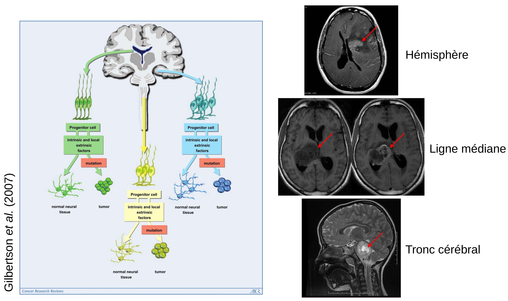
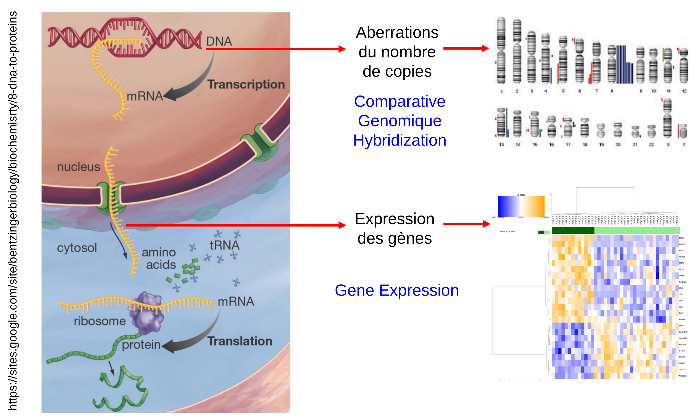
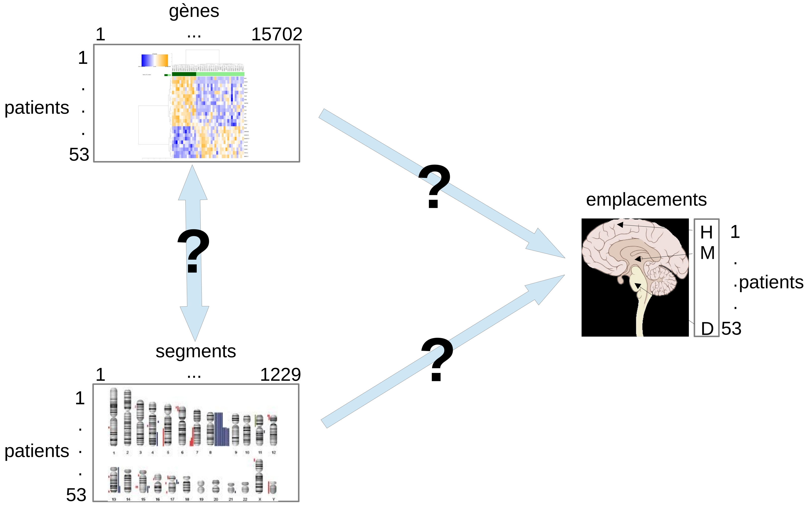
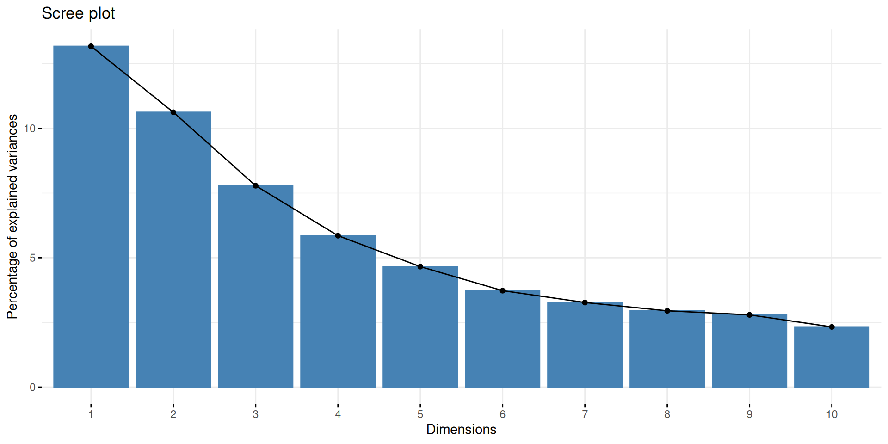
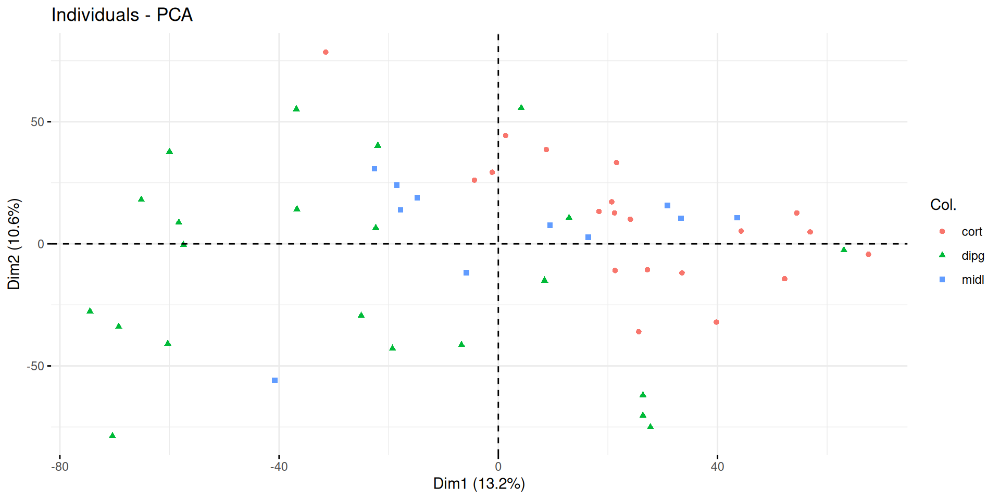
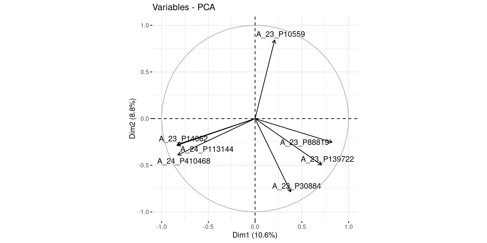

library(tidyverse)
library(gliomaData)
data("ge_cgh_locIGR")
ge <- ge_cgh_locIGR$multiblocks$GE
dim(ge)[1] 53 15702[1] 53 1229comment on les utilise en pratique. Répondre aux questions des méthodes factorielles : combien de composantes choisir ? Comment interpréter une carte des individus et un cercle de corrélation ?



Lesquelles connaissez-vous ou avez-vous déjà utilisées ? UMAP, t-SNE, MDS, PCoA, ICA etc. Sondage (wooclap)
$ R CMD INSTALL gliomaData_0.4.tar.gz
les écarts types des composantes principales, c’est-à-dire les racines carrées des valeurs propres de la matrice de covariance/corrélation.
La matrice des charges factorielles des variables (càd une matrice dont les colonnes contiennent les vecteurs propres).
Ce sont les corrélations entre les variables observées (originales) et les facteurs (ou composantes).
Elles indiquent à quel point chaque variable contribue à un facteur : + la charge est élevée, + la variable est fortement liée au facteur.
👉 En ACP, les charges sont les cosinus des angles entre les axes des variables et les composantes principales.
PC1 PC2 PC3 PC4 PC5
A_23_P212522 -0.012160235 -0.008619893 0.0006241499 -0.001370345 4.274409e-06
A_32_P30710 -0.001251253 -0.006089447 0.0069213794 0.001848697 -3.436176e-03
A_24_P470079 -0.003264395 -0.006669359 0.0034501429 -0.006671767 5.497904e-03
A_23_P65830 0.001820495 0.001325832 0.0030719736 -0.005142514 -5.222527e-03
A_23_P109143 0.007048612 0.004781884 -0.0124316938 -0.009063453 2.483269e-04
A_24_P932757 -0.008031082 -0.020481210 0.0166106863 0.015029387 -8.105594e-04
PC6 PC7 PC8 PC9
A_23_P212522 0.0062326792 -0.0124865873 -0.0047288695 0.0095672680
A_32_P30710 0.0002583856 0.0024541105 0.0040859856 0.0025144874
A_24_P470079 -0.0056457905 -0.0005013293 -0.0006713196 -0.0027364209
A_23_P65830 0.0052238460 -0.0001936418 0.0063465939 0.0033847126
A_23_P109143 -0.0026015325 0.0004716679 0.0098824774 0.0007116678
A_24_P932757 0.0012129700 0.0093703157 0.0009764959 -0.0139072445
PC10 PC11 PC12 PC13
A_23_P212522 0.0092248511 -7.227398e-03 -0.0076257868 -0.004928804
A_32_P30710 0.0015006735 3.801763e-05 0.0041776060 0.006721266
A_24_P470079 -0.0046916463 9.846797e-04 0.0042078910 -0.001060836
A_23_P65830 0.0007306805 -1.644394e-03 0.0040475089 0.010492337
A_23_P109143 -0.0046878753 -6.191989e-03 -0.0099253796 -0.005511380
A_24_P932757 -0.0055409392 8.232353e-03 0.0005684415 -0.008570986
PC14 PC15 PC16 PC17 PC18
A_23_P212522 6.074065e-05 -0.003633174 0.005656698 -0.0019401376 -0.007278156
A_32_P30710 5.524108e-03 -0.001925426 -0.004873837 -0.0036735476 -0.001075127
A_24_P470079 6.500123e-03 -0.006489514 0.001608821 -0.0012715317 -0.001213528
A_23_P65830 2.475401e-03 0.007222413 0.003177603 0.0029909292 -0.004216719
A_23_P109143 3.150060e-03 0.005149093 0.016033021 0.0005267546 -0.003647794
A_24_P932757 -2.413900e-03 0.002502899 -0.013138631 0.0203233202 0.010905709
PC19 PC20 PC21 PC22
A_23_P212522 -0.0045833164 -0.0014366905 0.017231508 0.0008784338
A_32_P30710 0.0011367413 -0.0010056198 0.001175475 0.0019252383
A_24_P470079 -0.0006625924 -0.0045984407 0.005399371 0.0097075866
A_23_P65830 -0.0057515142 -0.0003733501 -0.006791557 -0.0094411989
A_23_P109143 0.0007413642 0.0065476115 0.020359863 0.0053279842
A_24_P932757 -0.0072075522 -0.0065484758 0.002046330 0.0087763227
PC23 PC24 PC25 PC26
A_23_P212522 0.0002233584 -0.002954164 -0.0165509886 0.005628975
A_32_P30710 -0.0060443880 -0.001363731 -0.0002338502 -0.004448363
A_24_P470079 0.0131166235 -0.002671880 0.0023796321 0.006136490
A_23_P65830 -0.0036927804 0.001706706 0.0010605460 -0.008749593
A_23_P109143 -0.0006694981 0.002876245 -0.0051130551 0.010594493
A_24_P932757 -0.0056878516 0.006325286 -0.0037464652 -0.020666228
PC27 PC28 PC29 PC30 PC31
A_23_P212522 0.0212510407 0.0076836869 0.015119542 0.011492472 -6.324250e-03
A_32_P30710 -0.0074030267 -0.0010771305 0.004437106 0.010162378 5.334358e-03
A_24_P470079 0.0009442087 -0.0037145458 0.003427810 0.005232319 -3.866169e-05
A_23_P65830 0.0053244519 0.0006344789 0.005683271 -0.004758470 -3.887711e-03
A_23_P109143 -0.0046033587 0.0039333062 0.008585503 -0.001417893 -4.310245e-03
A_24_P932757 -0.0020351662 0.0088939472 0.001949920 0.001920204 -1.080052e-02
PC32 PC33 PC34 PC35
A_23_P212522 0.0058328382 0.0031121441 0.0129924879 -0.0013563548
A_32_P30710 0.0007809129 0.0036828356 0.0009351453 0.0009611616
A_24_P470079 -0.0057043913 -0.0058390860 0.0011190243 -0.0030706464
A_23_P65830 -0.0015398815 0.0041972044 -0.0042954940 0.0089903270
A_23_P109143 0.0028549763 -0.0007763133 0.0019131793 0.0064971403
A_24_P932757 -0.0094010486 -0.0084960685 -0.0067222155 0.0061108467
PC36 PC37 PC38 PC39
A_23_P212522 1.453751e-03 0.0105460406 0.0075313027 0.0053302408
A_32_P30710 2.639560e-04 0.0023144820 -0.0004592683 0.0010933670
A_24_P470079 9.676685e-05 -0.0059112753 -0.0040123675 -0.0024613270
A_23_P65830 5.725371e-03 0.0006157831 -0.0016715551 0.0059478721
A_23_P109143 -6.869689e-03 -0.0042107365 0.0106555131 0.0007562475
A_24_P932757 9.653765e-04 -0.0033720351 0.0099076081 -0.0116890203
PC40 PC41 PC42 PC43 PC44
A_23_P212522 -0.003020623 0.018476461 0.0004840937 -1.927180e-02 0.011292465
A_32_P30710 -0.004217168 -0.003551412 0.0055600602 9.219686e-05 0.003268225
A_24_P470079 0.004007319 0.004259994 0.0072080609 8.697258e-05 -0.002040912
A_23_P65830 -0.003546135 -0.007680559 -0.0041935224 -4.998289e-03 0.010116531
A_23_P109143 0.008800181 0.009397512 -0.0032528736 -3.665148e-03 -0.013627013
A_24_P932757 0.004376051 -0.008322184 0.0008622626 2.567201e-04 -0.005686081
PC45 PC46 PC47 PC48 PC49
A_23_P212522 0.003466617 -0.014183817 -5.643661e-03 0.0061560564 -0.002718383
A_32_P30710 -0.001153464 0.001717203 3.259414e-05 0.0009362043 -0.001108446
A_24_P470079 0.002129949 0.005423050 1.344340e-03 0.0081664310 -0.003535510
A_23_P65830 -0.001393176 -0.002209355 -1.009010e-03 -0.0070191723 0.002175512
A_23_P109143 -0.009230832 0.006104638 1.505804e-03 -0.0068358600 0.001609542
A_24_P932757 -0.012303917 0.003244714 4.516782e-03 0.0061116576 0.003827452
PC50 PC51 PC52 PC53
A_23_P212522 -1.104294e-02 0.0046869691 0.006038838 -0.20856519
A_32_P30710 -4.254538e-03 -0.0009565384 0.004779032 -0.07923912
A_24_P470079 -8.921722e-03 -0.0078811299 0.020305491 0.04504946
A_23_P65830 3.644917e-04 -0.0008742626 0.011503284 0.02948064
A_23_P109143 -3.912886e-03 -0.0052956556 0.003851484 0.02157673
A_24_P932757 -2.626192e-05 0.0021263247 -0.004547231 0.03569620La moyenne de chaque variable.
La variance de chaque variable.
la valeur des données rotatées : les données centrées (et éventuellement réduites) multipliées par la matrice de rotation.
PC1 PC2 PC3 PC4 PC5 PC6 PC7
P01 27.76234 -75.070096 15.601716 -12.4802994 22.301523 -1.480638 4.360086
P02 -22.36057 6.518867 1.658008 -57.2290494 -25.058922 -2.311333 -30.523645
P03 39.78780 -32.046108 38.421071 -3.5281183 -2.520405 26.536103 34.703937
P04 21.29036 -10.918556 28.352914 21.8013057 21.103978 -5.880404 2.790414
P05 44.30987 5.258756 21.833719 0.1615616 -16.731945 -32.149962 20.900340
P06 -69.26055 -33.939985 -8.995758 3.9299622 4.927449 -10.102584 21.852158
PC8 PC9 PC10 PC11 PC12 PC13 PC14
P01 -9.393903 43.26881 -21.229600 24.539518 -6.058532 40.997726 -5.0441778
P02 20.885015 -11.36456 -1.464040 4.147095 25.665250 23.734556 20.4962863
P03 -17.263955 18.16281 -9.358950 -19.469750 -7.791948 9.424723 15.0310480
P04 2.541886 -14.81270 -8.602144 -9.911321 9.447600 10.005271 -15.8846834
P05 -11.917910 1.92338 11.807211 8.613584 7.372093 7.910270 -0.5294018
P06 -12.894390 -29.84692 6.242375 -38.724105 -12.041610 19.070056 -8.6740996
PC15 PC16 PC17 PC18 PC19 PC20 PC21
P01 -13.311647 22.854812 0.1799697 -7.799883 43.106537 8.110722 12.126390
P02 -27.481912 -34.623144 3.0496452 -6.245401 13.535513 9.835904 6.957339
P03 -4.265227 -2.754922 -18.3871300 3.190408 -15.493955 11.706624 1.680948
P04 12.468903 12.200034 17.6648025 8.837212 -11.473638 7.411799 2.967409
P05 22.111793 -6.753704 21.5584838 -2.204116 5.115605 -4.872056 7.771854
P06 -19.419036 11.449003 -4.7705877 9.681152 -1.689946 -18.763624 12.067066
PC22 PC23 PC24 PC25 PC26 PC27
P01 -1.5387291 -3.255867 -5.4444411 -5.306344 -13.796396 10.2762876
P02 13.7427745 -3.748738 20.5467565 31.268651 4.924451 -5.5299822
P03 1.9349223 -3.079357 -0.7758917 5.487228 1.199811 -2.2044691
P04 5.3881845 1.752169 19.5158353 10.293805 -18.585028 -0.1664762
P05 0.8590946 -16.845426 -6.9018116 -3.292704 5.270542 -9.9676171
P06 8.2058189 9.983173 -11.6722230 2.291299 -1.447672 -24.2789928
PC28 PC29 PC30 PC31 PC32 PC33 PC34
P01 4.005557 2.8834101 -6.638846 -14.528647 4.858872 8.0194051 3.514910
P02 1.909716 13.8392978 -8.219374 11.379509 -10.506279 -2.3656773 -4.480085
P03 -1.892099 -0.8445373 -4.585050 -3.734951 -17.238213 -21.1378689 -17.531500
P04 -8.471938 -9.2359808 12.904157 8.483118 2.142332 0.8079683 -6.170960
P05 6.497752 -4.5851394 2.854874 10.111009 -31.560959 7.0601563 13.518110
P06 -3.114334 -3.7787241 -9.203673 -3.884755 -13.577679 7.6139406 -3.381075
PC35 PC36 PC37 PC38 PC39 PC40 PC41
P01 4.606103 2.749241 -1.808904 -8.2367026 -1.365029 -3.131921 3.426429
P02 -5.790089 1.996422 -6.828115 -2.6337209 4.860227 2.370969 4.119938
P03 8.486880 5.428095 -2.101855 -0.2013222 -12.896057 11.183075 -7.905435
P04 -6.077890 -2.386825 -12.219482 -17.3376721 4.279584 -4.944795 1.200745
P05 11.056372 -8.482257 20.008737 -6.6111223 19.201813 -5.851110 -8.523235
P06 7.894851 6.514108 -12.469003 1.1870361 -1.083316 -10.148898 3.424718
PC42 PC43 PC44 PC45 PC46 PC47
P01 0.6691749 2.7448517 0.6811543 2.0092146 0.5870819 -3.825970
P02 -1.9557573 2.6665162 0.2875328 0.3900017 -3.0145664 -3.452078
P03 2.0574795 -10.2732018 8.9065618 -20.9182471 -1.4402933 8.448059
P04 -5.0988875 -0.3989822 9.6313790 9.4482785 -1.6786660 23.495696
P05 11.7876229 2.2378014 0.4095551 -3.2022887 -7.7828315 3.567869
P06 5.1914466 -7.6001479 4.1846581 13.0622065 -1.1023578 -7.216748
PC48 PC49 PC50 PC51 PC52 PC53
P01 -0.7682908 -1.909207 1.954887 -0.9495765 0.08317379 1.346145e-15
P02 0.6734218 -1.253205 3.935379 0.5325188 0.25955112 6.668277e-15
P03 7.7016026 -1.273770 2.825672 -3.0325058 -1.25845002 1.366615e-14
P04 -8.5499261 -16.764786 2.330621 5.5170481 -0.18342289 1.010650e-14
P05 2.7341952 2.450407 1.231974 -1.3066736 -0.35072978 7.202572e-15
P06 -5.4888134 12.471891 -2.429406 5.4217874 -0.73823034 4.468648e-15


associer les graphes de l’ACP des données d’expression de gliomaData avec leur définition
Correspondances (wooclap)
Graphe des pourcentages de variance expliquée (pour sélectionner le nombre de composantes principales optimal)
Carte des individus (pour en déduire des clusters de patients)
Cercle des corrélations (pour en déduire le lien entre gènes et groupes de patients). Oh non, on ne voit rien !!